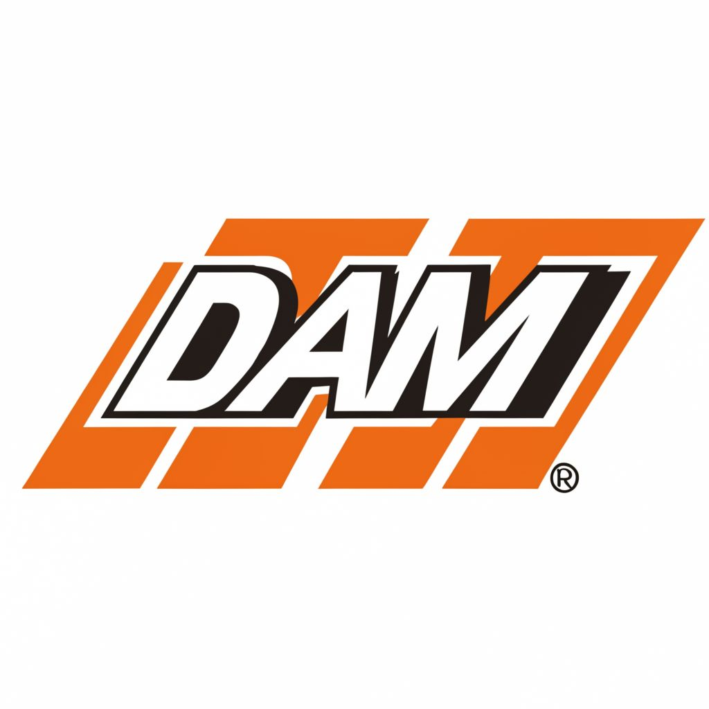
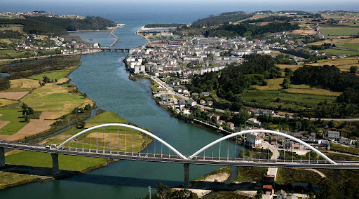

Sobre Nosotros
Empresa creada en el 2012, diseñada y propulsada por dos amigos, Dani y Adrián, de ahi viene el nombre de la marca (DAM).
Nacidos en el hospital de Jarrio, Navia, y realizaron sus estudios en el colegio público "Galileo Galilei", una vez acabados sus estudios decidieron lanzar su propia marca de motos, empezando asi con unos modelos muy básicos y poco a poco consiguiendo más fama.
En el 2021 ya siendo una de las marcas más relevantes de europa, decidieron lanzar una amplia variedad de modelos.